vignettes/MetagenomicsWithBioconductor.Rmd
MetagenomicsWithBioconductor.RmdThis workshop has been written for data science students who have a strong background in informatics and R, but little background in computational biology.
Bioconductor has a mature and diverse set of tools for working with metagenomic data. This workshop will cover a small segment of them. Metagenomics data comes in two distinct flavors; shotgun sequencing and amplicon sequencing.
Amplicon sequencing (sometimes referred to as barcoding or metabarcoding) involves isolating and sequencing a single phylogenetic marker gene from a sample. This technique surveys the diversity of organisms present in a sample (that have that marker gene). Amplicon sequencing is an inexpensive way to survey who is present in a sample, but it says little directly about what those organisms can do.
Shotgun sequencing involves sequencing all available DNA from a given sample and building a metagenomic assembly from those sequencing reads. This metagenomic assembly captures genes and local gene neighborhoods, providing more detail than just a survey of marker genes. Shotgun sequencing of metagenomes is what allows us to probe for antibiotic resistance genes and markers identifying community capabilities, as opposed to just community composition.
This workshop will focus on data produced by shotgun sequencing, though some parts of it will be applicable to amplicon data.
Learning goals. By the end of this workshop you should be able to:
MultiAssayExperiment;Prerequisites. Basic R; some familiarity with
SummarizedExperiment-style objects is helpful but not
required.
Packages used. MGnifyR,
MultiAssayExperiment,
TreeSummarizedExperiment, mia,
miaViz, scater, ComplexHeatmap,
vegan, ggplot2.
Sequencing experiments rely on a complex stack of chemistry, engineering, and bioinformatics. The basic data collection and initial data handling are going to be dependent upon the sequencing technology chosen. The three major technology providers are Illumina, PacBio, and Oxford Nanopore. Illumina data is sometimes colloquially referred to as short-read, while PacBio and Oxford Nanopore are colloquially referred to as long-read.
A majority of the data present in public repositories comes from Illumina.
In this workshop we will work with MGnify data using the
MGnifyR package to introduce metagenomics data structures,
how to work with them, and what kinds of applications they can be used
for. MGnify is a
public repository of metagenomics data from environmental sources, to
waste water, to clinical samples. The MGnifyR
package provides tools for accessing that data. The data this code chunk
collects is already cached in this workshop, so workshop participants
don’t need to run this code themselves. The data pulled from
MGnify here is already cached in this workshop, so we don’t
need this code chunk below. If you want to use this as a template for
other MGnify data, this will help you get it.
library(MGnifyR)
# increase R's default timeout limit of server calls, just because
options(timeout = 600)
# use a cache in R's temp directory
mg <- MgnifyClient(useCache = TRUE,
cacheDir = file.path(tempdir(),
"MGnifyR_cache"))
# danish waste water collection study from copenhagen
study_id <- "MGYS00001135"
analysis_ids <- searchAnalysis(mg, "studies", study_id)
# if you haven't changed R's default timeout option, this may complain
analysis_meta_data <- getMetadata(x = mg,
accession = analysis_ids)
# this is an idiomatic call to tapply; without specifying `FUN`
# tapply will return integer ids for the shared factor combinations,
# in this case, latitute and longitude
# it can contain NAs when NAs are present in a supplied INDEX
sample_locations <- tapply(X = analysis_meta_data,
INDEX = list(analysis_meta_data$`sample_geographic location (longitude)`,
analysis_meta_data$`sample_geographic location (latitude)`))
# metadata can be messy, we know ahead of time that this data can contain NAs,
# but this is a form you would use to check if you didn't
# know that ahead of time
# any(is.na(analysis_meta_data$`sample_geographic location (latitude)`))
# any(is.na(analysis_meta_data$`sample_geographic location (longitude)`))
# we want to select the sampling location with the fewest samples, for simplicity
# table the sample location index, find the lowest value, get the name
# that in this case is just an integer
w1 <- as.integer(names(which.min(table(sample_locations))))
# which() manages NAs for us
analysis_subset <- analysis_meta_data[which(sample_locations == w1), ]
# getting a single tree summarized experiment
tse <- getResult(x = mg,
accession = analysis_subset[["analysis_accession"]][1],
get.func = FALSE)
# getting a multiassayexperiment containing the tses for several accessions
mse <- getResult(x = mg,
accession = analysis_subset[["analysis_accession"]])We can access MGnify data either through generic R accessors and
tools, or through the MGnifyR package and the miaverse
family of packages. MGnify provides a small example code
snippet for how the former looks. We can also write up our own
versions of this.
library(jsonlite)
# we can interact with resource APIs through the 'jsonlite' package
API <- "https://www.ebi.ac.uk/metagenomics/api/v2"
# data from a survey of waste water in Copenhagen
STUDY <- "MGYS00001135"
# a simple helper function
get_json <- function(path) {
file <- tempfile()
on.exit(unlink(file))
download.file(paste0(API,
"/",
path),
file,
quiet = TRUE)
res <- fromJSON(file)
return(res)
}
# get our up front meta data on a selected study
study <- get_json(paste0("studies/",
STUDY))
# get a subset of the study analyses
batch <- get_json(paste0("studies/", STUDY, "/analyses/?page=1&page_size=20"))
analyses <- as.data.frame(batch$items)
ANALYSIS <- analyses$accession[1]
analysis <- get_json(paste0("analyses/",
ANALYSIS))
# this is a list of all downloadable files from the selected study
downloads <- as.data.frame(analysis$downloads)
# get the OTU table in tsv format
w1 <- which(downloads$file_type == "tsv" &
grepl(pattern = "OTUs",
x = downloads$short_description))
if (length(w1) > 0) {
# grab w1[1], just in case we get multiple hits
target_url <- downloads$url[w1[1]]
tmp01 <- tempfile(fileext = ".tsv.gz")
download.file(target_url,
tmp01,
quiet = TRUE,
mode = "wb")
raw_tax_table <- try(read.table(file = tmp01,
header = FALSE,
comment.char = "#",
sep = "\t"))
}An advantage of knowing how to interact with the API this way is that
you can interact with MGnify data in minimal dependency environments, or
in places where you may not be able to control what packages you have
access to. It can also give you an understanding of what the data
actually looks like under the hood. A disadvantage of this
approach is foregoing the use of the helpers present in the
miaverse.
suppressMessages(library(MultiAssayExperiment))
suppressMessages(library(TreeSummarizedExperiment))
suppressMessages(library(mia))
suppressMessages(library(miaViz))
suppressMessages(library(scater))
suppressMessages(library(UpSetR))
suppressMessages(library(ComplexHeatmap))
# get the absolute path to our workshop data
data_path <- system.file("extdata", "workshop_data.RData",
package = "MetagenomicsWithBioconductor",
mustWork = TRUE)
# load the data
load(data_path, verbose = TRUE)
#> Loading objects:
#> tse
#> mse
names(mse)
#> [1] "Taxonomic analysis" "go-slim" "go-terms"
#> [4] "interpro-identifiers"
# show which accessions have which experiments
upsetSamples(mse)
#> Warning: `aes_string()` was deprecated in ggplot2 3.0.0.
#> ℹ Please use tidy evaluation idioms with `aes()`.
#> ℹ See also `vignette("ggplot2-in-packages")` for more information.
#> ℹ The deprecated feature was likely used in the UpSetR package.
#> Please report the issue at <https://github.com/hms-dbmi/UpSetR/issues>.
#> This warning is displayed once per session.
#> Call `lifecycle::last_lifecycle_warnings()` to see where this warning was
#> generated.
#> Warning: Using `size` aesthetic for lines was deprecated in ggplot2 3.4.0.
#> ℹ Please use `linewidth` instead.
#> ℹ The deprecated feature was likely used in the UpSetR package.
#> Please report the issue at <https://github.com/hms-dbmi/UpSetR/issues>.
#> This warning is displayed once per session.
#> Call `lifecycle::last_lifecycle_warnings()` to see where this warning was
#> generated.
#> Warning: The `size` argument of `element_line()` is deprecated as of ggplot2 3.4.0.
#> ℹ Please use the `linewidth` argument instead.
#> ℹ The deprecated feature was likely used in the UpSetR package.
#> Please report the issue at <https://github.com/hms-dbmi/UpSetR/issues>.
#> This warning is displayed once per session.
#> Call `lifecycle::last_lifecycle_warnings()` to see where this warning was
#> generated.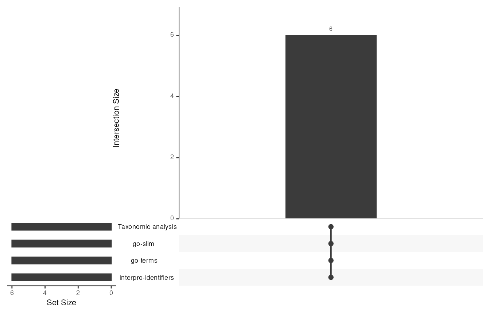
For this workshop and for a lot of modern MGnify data
upset plots won’t be particularly interesting. However they can be very
useful for metastudies, managing comparisons across experimental
regimes, or across time periods that span technology generations.
The data we pull from MGnify will be of class
MultiAssayExperiment. In most cases, we will break that
into the TreeSummarizedExperiment objects that compose it.
The data inside can be accessed with accessors like
assay(), colData(), and
rowData(). Sometimes that data can be a bit messy, so
helper functions like the clean_counts() function below
helps us manage where NAs can appear in it.
# break out by experiment type
tse_tax <- getWithColData(x = mse,
i = "Taxonomic analysis")
#> Warning: 'experiments' dropped; see 'drops()'
#> Warning: Ignoring redundant column names in 'colData(x)':
tse_go_slim <- getWithColData(x = mse,
i = "go-slim")
#> Warning: 'experiments' dropped; see 'drops()'
#> Warning: Ignoring redundant column names in 'colData(x)':
tse_go_terms <- getWithColData(x = mse,
i = "go-terms")
#> Warning: 'experiments' dropped; see 'drops()'
#> Warning: Ignoring redundant column names in 'colData(x)':
tse_interpro <- getWithColData(x = mse,
i = "interpro-identifiers")
#> Warning: 'experiments' dropped; see 'drops()'
#> Warning: Ignoring redundant column names in 'colData(x)':
clean_counts <- function(x,
label,
assay.type = "counts") {
counts <- as.matrix(assay(x, assay.type))
# 1. Samples with no values at all have no result of this type: drop them
all_missing <- colSums(!is.na(counts)) == 0L
if (any(all_missing)) {
message(label, ": dropping ", sum(all_missing),
" sample(s) with no results: ",
paste(colnames(x)[all_missing], collapse = ", "))
x <- x[, !all_missing]
counts <- counts[, !all_missing, drop = FALSE]
}
# 2. Within a sample, NA means "not reported", i.e. not detected: set to 0
n_na <- sum(is.na(counts))
if (n_na > 0L) {
message(label, ": treating ", n_na, " NA values (",
round(100 * n_na / length(counts), 1),
"% of entries) as zero, meaning not detected")
counts[is.na(counts)] <- 0
}
# 3. Drop features that are now zero in every remaining sample
absent <- rowSums(counts) == 0
if (any(absent)) {
message(label, ": dropping ", sum(absent), " feature(s) absent from all samples")
x <- x[!absent, ]
counts <- counts[!absent, , drop = FALSE]
}
# Keep only the cleaned counts; any other assay was computed from NA data
assays(x) <- S4Vectors::SimpleList(counts = counts)
return(x)
}
tse_tax <- clean_counts(tse_tax,
"Taxonomic analysis")
tse_go_slim <- clean_counts(tse_go_slim,
"go-slim")
tse_go_terms <- clean_counts(tse_go_terms,
"go-terms")
tse_interpro <- clean_counts(tse_interpro,
"interpro-identifiers")The experiments supplied differ in how many features they describe
and how sparse they are. This can be as much of a function of analysis
pipeline as it is the samples and experimental design. For
MGnify data, an analysis_pipeline.version
piece of metadata can tell us about the pipeline that was used to
process the raw data.
colData(mse)$analysis_pipeline.version
#> [1] "2.0" "2.0" "2.0" "2.0" "2.0" "2.0"
summarise_experiment <- function(x, label) {
counts <- as.matrix(assay(x, "counts"))
data.frame(experiment = label,
features = nrow(counts),
samples = ncol(counts),
percent_zero = round(100 * mean(counts == 0), 1),
median_total_count = median(colSums(counts)))
}
experiment_summary <- rbind(
summarise_experiment(tse_tax, "Taxonomic analysis"),
summarise_experiment(tse_go_slim, "go-slim"),
summarise_experiment(tse_go_terms, "go-terms"),
summarise_experiment(tse_interpro, "interpro-identifiers")
)
knitr::kable(experiment_summary)| experiment | features | samples | percent_zero | median_total_count |
|---|---|---|---|---|
| Taxonomic analysis | 4653 | 6 | 68.4 | 4247 |
| go-slim | 115 | 6 | 1.4 | 1691732 |
| go-terms | 2104 | 6 | 17.6 | 1341474 |
| interpro-identifiers | 10956 | 6 | 21.7 | 1298448 |
The mia package contains a series of addX()
functions that let us append analyses to our objects.
addMDS() performs principle coordinate analysis on the
assay passed to assay.type if a user supplied an
incompatible assay and analysis combination, these functions should
provide a meaningful error. addAlpha(), used below
calculates the mean diversity of a sample.
tse_tax <- transformAssay(tse_tax,
assay.type = "counts",
method = "relabundance")
tse_tax <- addAlpha(tse_tax,
assay.type = "counts",
index = c("shannon",
"observed"))
colData(tse_tax)$read_count <- colSums(assay(tse_tax,
"counts"))
plotColData(tse_tax,
x = "read_count",
y = "observed") +
labs(x = "Reads with a taxonomic assignment",
y = "Observed taxa")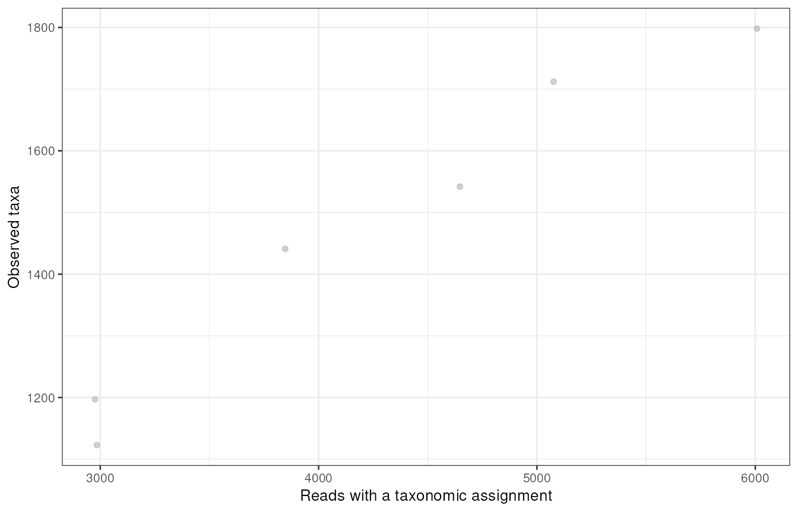
If samples with greater sequencing depth detect more taxa, differences in observed richness may reflect that sequencing depth rather than sample ecology. Relative abundances give us a tool for cross sample comparison that controls for differences in sequencing depth.
# agglomerate to phylum; keep reads with no phylum assignment
tse_phylum <- agglomerateByRank(tse_tax,
rank = "Phylum",
empty.rm = FALSE)
tse_phylum <- transformAssay(tse_phylum,
assay.type = "counts",
method = "relabundance")
top_tax <- getTop(tse_phylum,
top = 10,
assay.type = "relabundance")
# keep the top phyla, label unassigned reads, and group the rest as "Other"
phylum <- rowData(tse_phylum)$Phylum
phylum_label <- ifelse(is.na(phylum) | !nzchar(phylum),
"Unassigned",
ifelse(rownames(tse_phylum) %in% top_tax,
phylum,
"Other"))
rowData(tse_phylum)$Phylum_top <- phylum_label
tse_phylum_top <- agglomerateByVariable(tse_phylum,
by = "rows",
group = "Phylum_top")
plotAbundance(tse_phylum_top,
assay.type = "relabundance",
order.row.by = "abund")
#> Warning: Removed 5 rows containing missing values or values outside the scale range
#> (`geom_bar()`).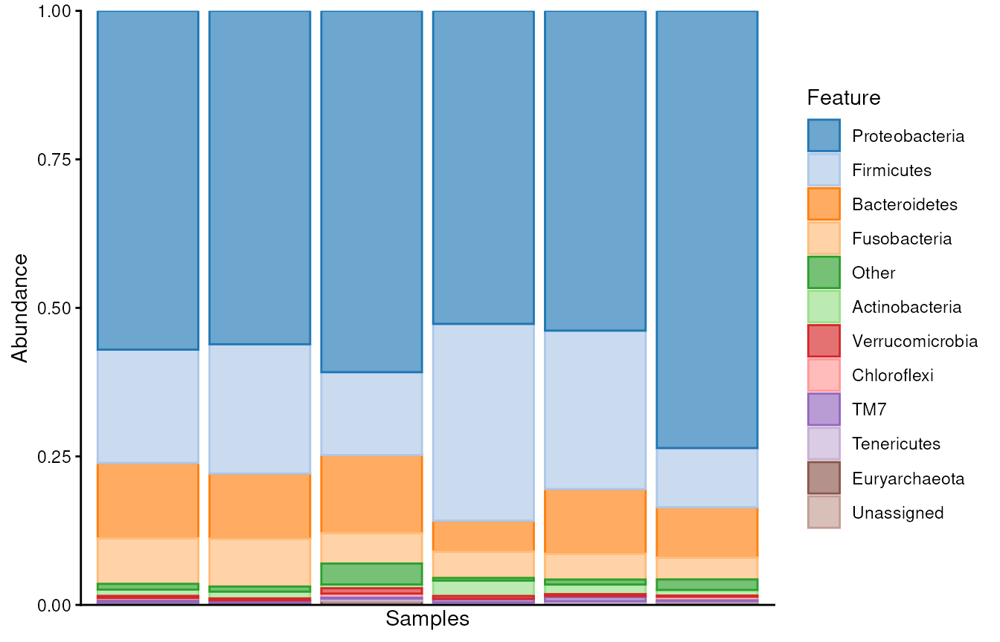
Stacked bar charts give us an idea of proportional differences between samples. However as stated before, the relative abundance is also useful to plot. These are often plotted on a log axis to make differences in relative abundance scales easier to observe.
plotAbundanceDensity(tse_phylum,
layout = "jitter",
assay.type = "relabundance",
n = 10) +
scale_x_log10()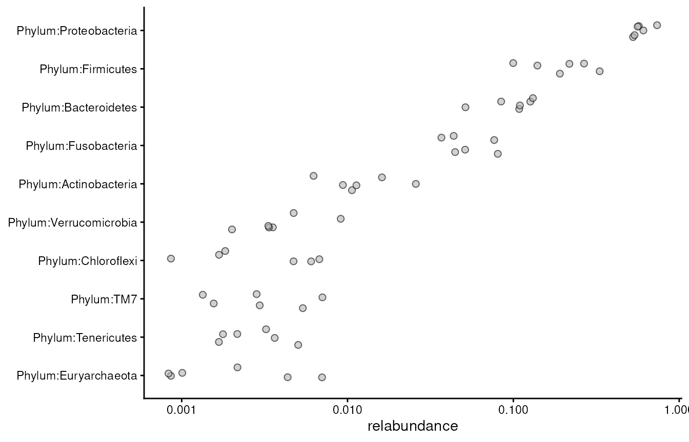
tse_tax <- addMDS(tse_tax,
assay.type = "relabundance",
method = "bray",
name = "MDS_bray")
#> Warning: Not all rows were present in the rowTree specified by 'tree.name'. 'x'
#> is subsetted.
dominant_phylum <- getDominant(tse_tax,
rank = "Phylum",
complete = FALSE)
colData(tse_tax)$dominant_phylum <- dominant_phylum[colnames(tse_tax)]
plotReducedDim(tse_tax,
"MDS_bray",
colour_by = "dominant_phylum",
size_by = "shannon")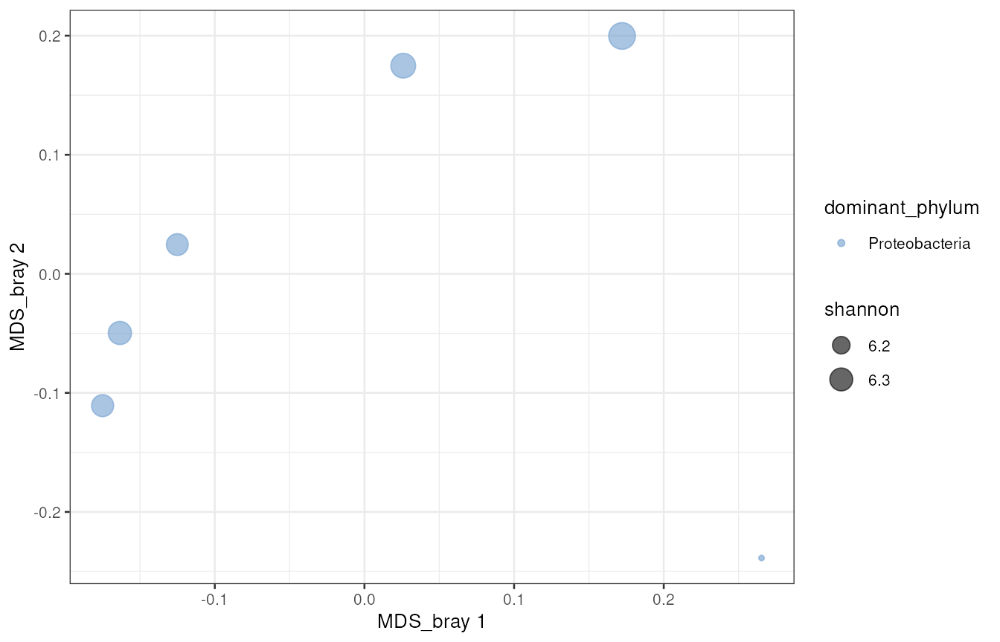
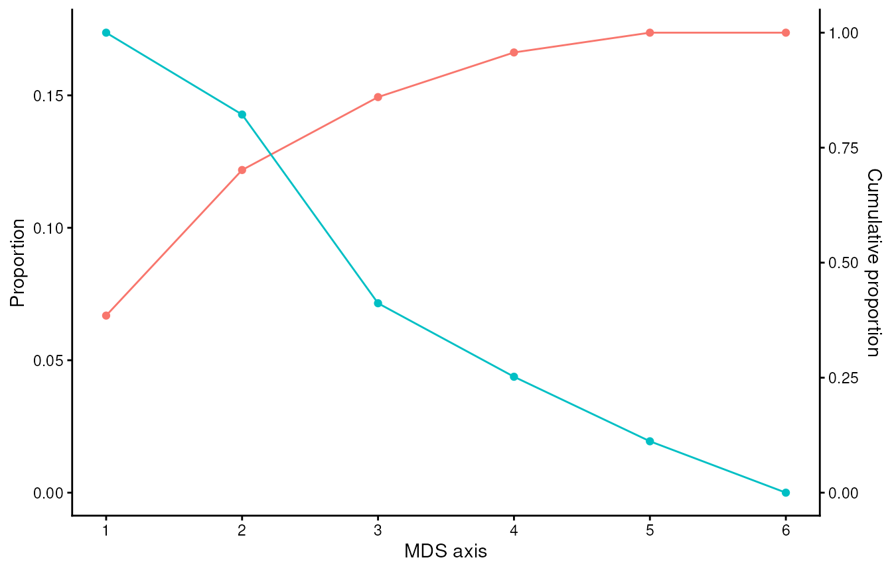
So far we have described each sample on its own (alpha diversity). Ordination asks a different question: how do the samples relate to each other (beta diversity)?
Bray-Curtis dissimilarity compares two samples’ relative abundances, taxon by taxon. It is 0 when two samples have identical composition and 1 when they share no taxa. Because it works on abundances, it is driven mostly by the common taxa; a rare taxon that appears in only one sample barely moves it.
MDS (also called principal coordinates analysis, PCoA) takes the table of all pairwise dissimilarities and places the samples in a few dimensions so that the distances on the plot approximate the Bray-Curtis values as closely as possible. A few rules for reading it:
In our data, all six samples are dominated by Proteobacteria, which is common in sewage, so colouring by dominant phylum tells us very little. That is a useful result in itself: the differences between these samples lie in the balance of many taxa, not in which phylum is dominant. Shannon diversity is similar across these samples, but the sample in the lower right sits apart from the others and has the lowest diversity. That pattern would be worth following up in the sample metadata.
On the scree plot, the left-hand axis is labelled “Proportion” but actually shows the raw eigenvalues; read the cumulative line against the right-hand axis instead. The first axis captures about 38% of the between-sample variation and the second about 32%, so the 2D plot shows roughly 70% of it. With six samples there can be at most five informative axes, which is why the last value is zero.
With six samples from a single location, this plot describes
variation; it cannot test differences between groups. If the metadata
contained a grouping variable (a treatment or sampling date, for
example), getPERMANOVA() would be the next step for testing
whether it explains the differences.
MGnify predicts protein-coding sequences in each sample and annotates them with InterProScan. The three functional experiments are related views of the same annotations, at different resolutions:
interpro-identifiers: counts of
predicted proteins matching each InterPro entry (protein families,
domains, and sites). This is the finest resolution, with thousands of
features.go-terms: Gene Ontology terms mapped
from those InterPro entries. Each term belongs to one of three
namespaces: biological process, molecular function, or cellular
component.go-slim: a small, curated subset of
broad GO terms that is much easier to summarise and plot.Two things to keep in mind:
# readable labels: "description (accession)" when a description is available
feature_labels <- function(x, max_chars = 60L) {
rd <- rowData(x)
desc_col <- intersect(c("description", "Description", "name"), colnames(rd))
if (length(desc_col) == 0L) {
return(rownames(x))
}
desc <- as.character(rd[[desc_col[1]]])
labels <- ifelse(is.na(desc) | !nzchar(desc),
rownames(x),
paste0(desc, " (", rownames(x), ")"))
too_long <- nchar(labels) > max_chars
labels[too_long] <- paste0(substr(labels[too_long], 1L, max_chars - 3L), "...")
make.unique(labels)
}
# which rowData column holds a feature description, or NA if none
description_column <- function(x) {
found <- intersect(c("description", "Description", "name"),
colnames(rowData(x)))
if (length(found) == 0L) NA_character_ else found[1]
}
tse_go_slim <- transformAssay(tse_go_slim, assay.type = "counts", method = "relabundance")
tse_go_terms <- transformAssay(tse_go_terms, assay.type = "counts", method = "relabundance")
tse_interpro <- transformAssay(tse_interpro, assay.type = "counts", method = "relabundance")The same depth question we asked of taxonomy applies to function: does finding more distinct functions in a sample just mean it was sequenced more deeply?
interpro_counts <- as.matrix(assay(tse_interpro, "counts"))
# zeros are represented by NAs in this data, we need to fix that:
# interpro_counts[is.na(interpro_counts)] <- 0
interpro_depth <- data.frame(
sample = colnames(tse_interpro),
annotation_count = colSums(interpro_counts),
distinct_entries = colSums(interpro_counts > 0)
)
ggplot(interpro_depth,
aes(x = annotation_count, y = distinct_entries)) +
geom_point() +
labs(x = "InterPro annotations in sample",
y = "Distinct InterPro entries detected")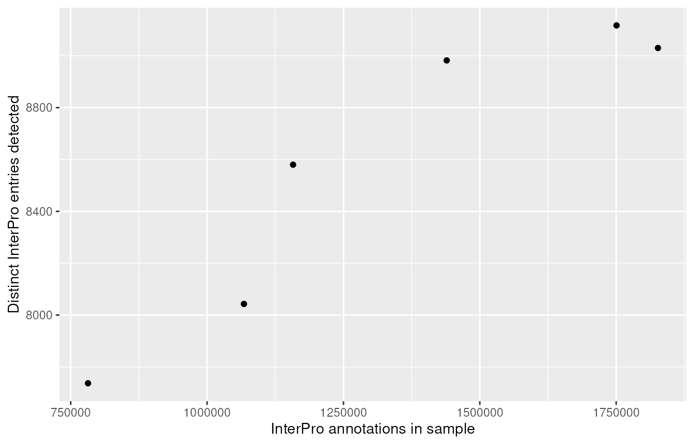
Each point is one sample. The x-axis is the total number of InterPro annotations, meaning how many predicted proteins matched an InterPro entry, counting a protein once for each entry it matches. The y-axis is the number of different InterPro entries found in that sample.
Our samples range from roughly 0.8 to 1.8 million annotations, and from about 7,700 to just over 9,100 distinct entries. The shape matters more than the numbers. Distinct entries rise steeply across the shallower samples, then level off: the three deepest samples are within about 150 entries of each other, while the shallowest has around 1,400 fewer.
This is a saturation curve, the functional equivalent of a rarefaction curve. Common functions are found almost immediately; rare ones only turn up as more of the community is sequenced. Once the curve flattens, extra sequencing adds little new, and the remaining differences between samples are more likely to be real. Below that point, depth and biology are mixed together.
The practical consequence is that a lower count of distinct functions
in a shallow sample isn’t evidence that its community is less
functionally diverse. To compare functional richness fairly you can
subsample every sample to the same depth (rarefyAssay() in
mia), compare relative abundances instead, or restrict
comparisons to entries that are common enough to be detected at any
depth (the prevalence filter we use for the heatmap below).
GO-slim terms are deliberately broad. Each one stands in for a large part of the Gene Ontology, so a few dozen terms summarise thousands of specific GO annotations. Note that the list mixes all three GO branches: “nitrogen compound metabolic process” is a biological process, “nucleotide binding” a molecular function, and “membrane” a cellular component.
The plot shows the 15 most abundant terms. Each point is one sample, placed at that term’s share of the sample’s GO-slim annotations.
tse_go_slim_labelled <- tse_go_slim
rownames(tse_go_slim_labelled) <- feature_labels(tse_go_slim)
plotAbundanceDensity(tse_go_slim_labelled,
layout = "jitter",
assay.type = "relabundance",
n = 15)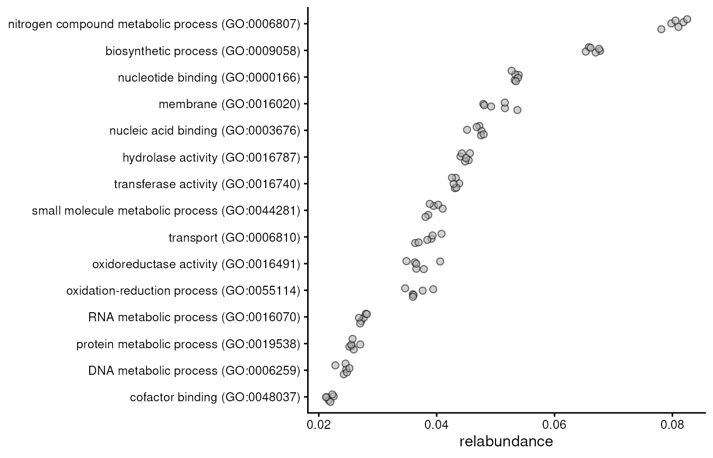
Two things stand out. First, the top terms are the broad machinery of cellular life: metabolism, biosynthesis, binding nucleotides and nucleic acids, transport. Nearly every bacterium carries genes for these, so they dominate any community.
Second, the points for each term sit very close together. On the taxonomy ordination our six samples were clearly spread out, yet at this broad functional level they look almost identical. This is an early hint of functional redundancy: different mixes of organisms can carry out much the same overall set of functions. We test this more directly in the “Comparing taxonomic and functional views” section. The slightly wider spread for terms such as “membrane”, “transport” and the oxidation-reduction terms shows where the small functional differences between these samples are concentrated.
Three cautions:
Every GO term belongs to one of three branches, which GO calls namespaces:
MGnify stores the branch in the lineage column of
rowData(). Summing counts within each branch shows how a
sample’s annotations divide across them. The first output also gives the
fraction of all GO terms that were not detected in each
sample.
# give a proportion of how many GO-terms show up as NAs
apply(X = assay(tse_go_terms),
FUN = function(x) {
sum(x == 0) / length(x)
},
MARGIN = 2)
#> MGYA00065325 MGYA00067516 MGYA00067518 MGYA00067519 MGYA00067523 MGYA00067506
#> 0.1250000 0.1406844 0.2267110 0.2357414 0.1791825 0.1516160
go_rd <- rowData(tse_go_terms)
namespace_col <- intersect(c("lineage", "category", "namespace"), colnames(go_rd))
if (length(namespace_col) == 0L) {
message("No GO namespace column found in rowData(tse_go_terms); ",
"available columns: ", paste(colnames(go_rd), collapse = ", "))
} else {
namespace <- as.character(go_rd[[namespace_col[1]]])
rowData(tse_go_terms)$namespace <- ifelse(is.na(namespace) | !nzchar(namespace),
"unknown",
namespace)
tse_go_namespace <- agglomerateByVariable(tse_go_terms,
by = "rows",
group = "namespace")
tse_go_namespace <- transformAssay(tse_go_namespace,
assay.type = "counts",
method = "relabundance")
plotAbundance(tse_go_namespace,
assay.type = "relabundance")
}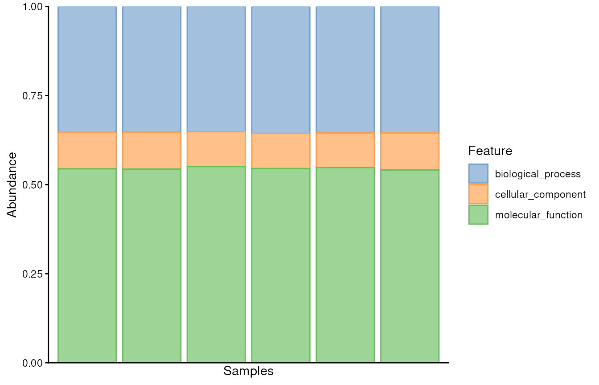
Between 12% and 24% of the GO terms in the dataset are absent from any one sample, a far less sparse table than InterPro.
The branch proportions are almost identical in all six samples: roughly 55% molecular function, 35% biological process, and 10% cellular component. That stability tells us more about how annotation works than about the communities. GO terms here are assigned by mapping InterPro entries to GO, and most InterPro families and domains map naturally to a molecular function (a binding site or catalytic activity). Fewer map to a cellular component, partly because bacterial cells have few internal compartments to annotate.
So treat this plot as a sanity check rather than a biological finding. Similar proportions across samples suggest they were annotated consistently. A sample that departed noticeably would more likely point to a difference in processing, such as a different pipeline version, than to a different community.
As with GO-slim, these are annotation counts, not gene counts. A single protein can map to terms in more than one branch, so “55% molecular function” does not mean 55% of genes.
With thousands of entries, we filter before plotting: keep entries found in at least half of the samples, then show the most abundant of those. The CLR transform is computed on all features first, then subset.
tse_interpro <- transformAssay(tse_interpro,
assay.type = "counts",
method = "clr",
pseudocount = TRUE)
tse_interpro_prevalent <- subsetByPrevalent(tse_interpro,
assay.type = "relabundance",
detection = 0,
prevalence = 0.5)
top_interpro <- getTop(tse_interpro_prevalent,
top = 30,
assay.type = "relabundance")
heatmap_matrix <- assay(tse_interpro_prevalent, "clr")[top_interpro, , drop = FALSE]
rownames(heatmap_matrix) <- feature_labels(tse_interpro_prevalent[top_interpro, ])
heatmap_matrix <- heatmap_matrix[apply(heatmap_matrix, 1, sd) > 0, , drop = FALSE]
heatmap_matrix <- t(scale(t(heatmap_matrix)))
ComplexHeatmap::Heatmap(heatmap_matrix,
name = "CLR z-score",
row_names_gp = grid::gpar(fontsize = 7),
column_names_gp = grid::gpar(fontsize = 8))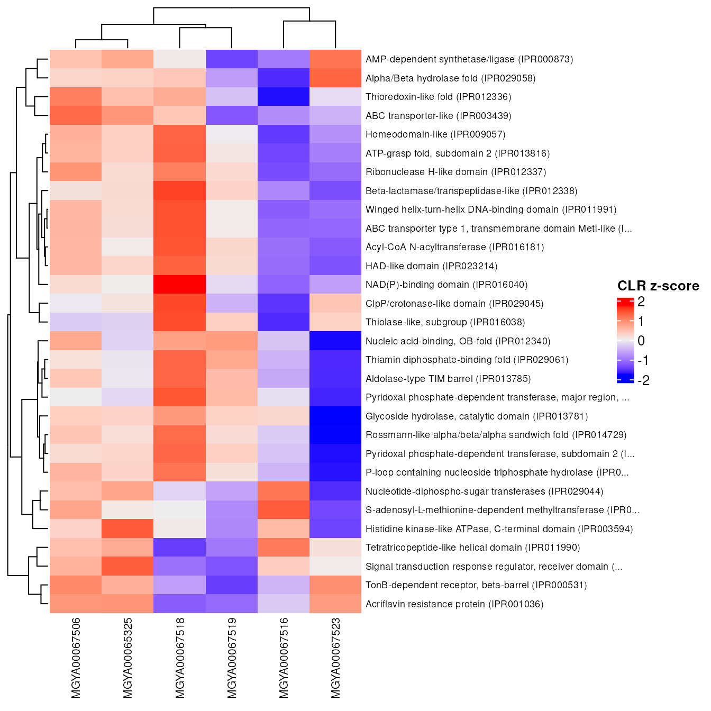
Colour shows whether an entry is relatively high or low in that sample compared with its own average, not whether it is abundant overall.
Searching InterPro descriptions lets us ask focused questions. Here we look for protein families whose names suggest antibiotic resistance:
desc_col <- description_column(tse_interpro)
if (is.na(desc_col)) {
message("No description column in rowData(tse_interpro); skipping keyword search.")
} else {
descriptions <- tolower(as.character(rowData(tse_interpro)[[desc_col]]))
descriptions[is.na(descriptions)] <- ""
keywords <- c("beta-lactamase", "tetracycline", "vancomycin",
"aminoglycoside", "multidrug efflux")
relabundance <- as.matrix(assay(tse_interpro, "relabundance"))
keyword_results <- do.call(rbind, lapply(keywords, function(keyword) {
matches <- grepl(keyword, descriptions, fixed = TRUE)
data.frame(keyword = keyword,
sample = colnames(relabundance),
entries_matched = sum(matches),
proportion = if (any(matches)) {
colSums(relabundance[matches, , drop = FALSE])
} else {
rep(0, ncol(relabundance))
})
}))
print(unique(keyword_results[, c("keyword", "entries_matched")]))
ggplot(keyword_results,
aes(x = keyword, y = proportion)) +
geom_boxplot(outlier.shape = NA) +
geom_jitter(width = 0.15) +
coord_flip() +
labs(x = NULL,
y = "Share of InterPro annotations")
}
#> keyword entries_matched
#> MGYA00065325 beta-lactamase 12
#> MGYA000653251 tetracycline 8
#> MGYA000653252 vancomycin 1
#> MGYA000653253 aminoglycoside 6
#> MGYA000653254 multidrug efflux 2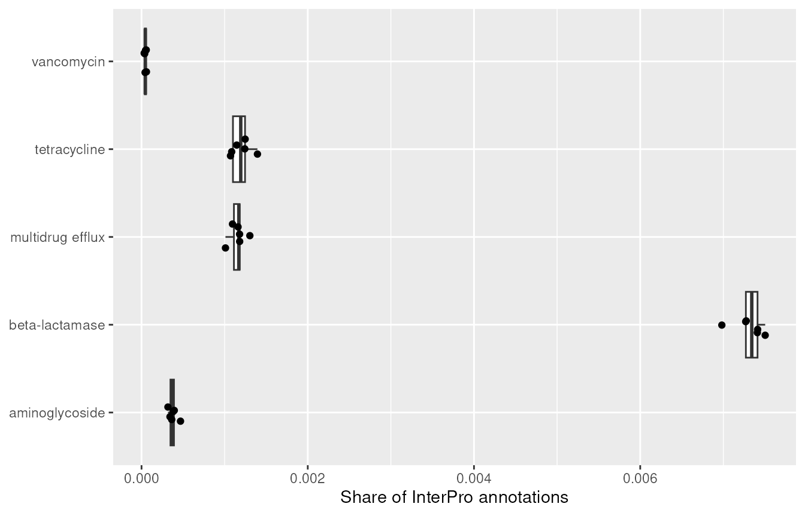
Treat this as exploration, not resistance-gene detection. A name match is only a proxy: the “metallo-beta-lactamase” superfamily, for example, contains many enzymes that have nothing to do with antibiotics. Dedicated resources such as CARD or AMRFinderPlus are needed before making claims about resistance genes.
How different do the samples look depending on which features we describe them by? We compare pairwise Bray-Curtis dissimilarities across all the views, using only samples present in every experiment.
shared_samples <- Reduce(intersect, list(colnames(tse_tax),
colnames(tse_go_slim),
colnames(tse_go_terms),
colnames(tse_interpro)))
n_shared <- length(shared_samples)
message("Samples present in every experiment: ", n_shared)
if (n_shared < 3L) {
stop("Too few shared samples to compare dissimilarities.")
}
pairwise_bray <- function(x, label) {
d <- getDissimilarity(x[, shared_samples],
assay.type = "relabundance",
method = "bray")
data.frame(profile = label, bray = as.vector(d))
}
dissimilarities <- rbind(
pairwise_bray(tse_phylum, "Taxonomy: phylum"),
pairwise_bray(tse_tax, "Taxonomy: all taxa"),
pairwise_bray(tse_go_slim, "Function: GO-slim"),
pairwise_bray(tse_go_terms, "Function: GO terms"),
pairwise_bray(tse_interpro, "Function: InterPro")
)
dissimilarities$profile <- factor(dissimilarities$profile,
levels = unique(dissimilarities$profile))
ggplot(dissimilarities,
aes(x = profile, y = bray)) +
geom_boxplot(outlier.shape = NA) +
geom_jitter(width = 0.15, alpha = 0.6) +
coord_flip() +
labs(x = NULL,
y = "Pairwise Bray-Curtis dissimilarity")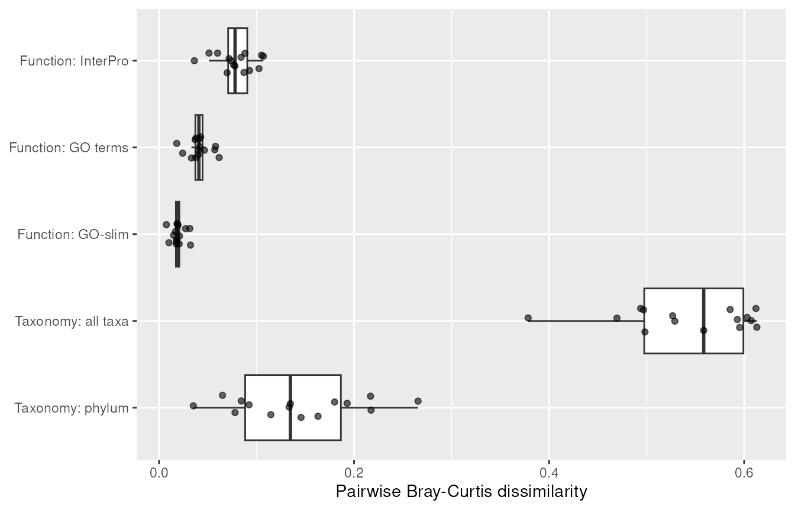
Two things usually show up here:
Do samples that are taxonomically similar also tend to be functionally similar? A Mantel test compares the two dissimilarity matrices:
d_taxonomy <- getDissimilarity(tse_phylum[, shared_samples],
assay.type = "relabundance",
method = "bray")
d_function <- getDissimilarity(tse_go_slim[, shared_samples],
assay.type = "relabundance",
method = "bray")
vegan::mantel(d_taxonomy,
d_function,
method = "spearman",
permutations = 999)
#>
#> Mantel statistic based on Spearman's rank correlation rho
#>
#> Call:
#> vegan::mantel(xdis = d_taxonomy, ydis = d_function, method = "spearman", permutations = 999)
#>
#> Mantel statistic r: 0.6321
#> Significance: 0.013889
#>
#> Upper quantiles of permutations (null model):
#> 90% 95% 97.5% 99%
#> 0.358 0.462 0.554 0.647
#> Permutation: free
#> Number of permutations: 719With very few samples there are only a handful of distinct permutations, so the p-value is coarse. Read it as a description of these samples, not a general result.
tse_genus <- agglomerateByRank(getWithColData(x = mse,
i = "Taxonomic analysis"),
rank = "Genus")
#> Warning: 'experiments' dropped; see 'drops()'
#> Warning: Ignoring redundant column names in 'colData(x)':
tse_genus <- transformAssay(tse_genus,
assay.type = "counts",
method = "relabundance")
tse_genus <- transformAssay(tse_genus,
assay.type = "counts",
method = "clr",
pseudocount = TRUE)
go_slim_shared <- transformAssay(tse_go_slim[, shared_samples],
assay.type = "counts",
method = "clr",
pseudocount = TRUE)
top_genus <- getTop(tse_genus, top = 15, assay.type = "relabundance")
top_go_slim <- getTop(go_slim_shared, top = 15, assay.type = "relabundance")
go_slim_top <- go_slim_shared[top_go_slim, ]
rownames(go_slim_top) <- feature_labels(go_slim_top, max_chars = 40L)
mae_small <- MultiAssayExperiment(
experiments = ExperimentList(genus = tse_genus[top_genus, ],
go_slim = go_slim_top)
)
associations <- getCrossAssociation(mae_small,
experiment1 = "genus",
experiment2 = "go_slim",
assay.type1 = "clr",
assay.type2 = "clr",
method = "spearman",
mode = "matrix",
test.signif = TRUE,
p.adj.method = "fdr")
ComplexHeatmap::Heatmap(associations$cor,
name = "Spearman",
row_names_gp = grid::gpar(fontsize = 7),
column_names_gp = grid::gpar(fontsize = 7))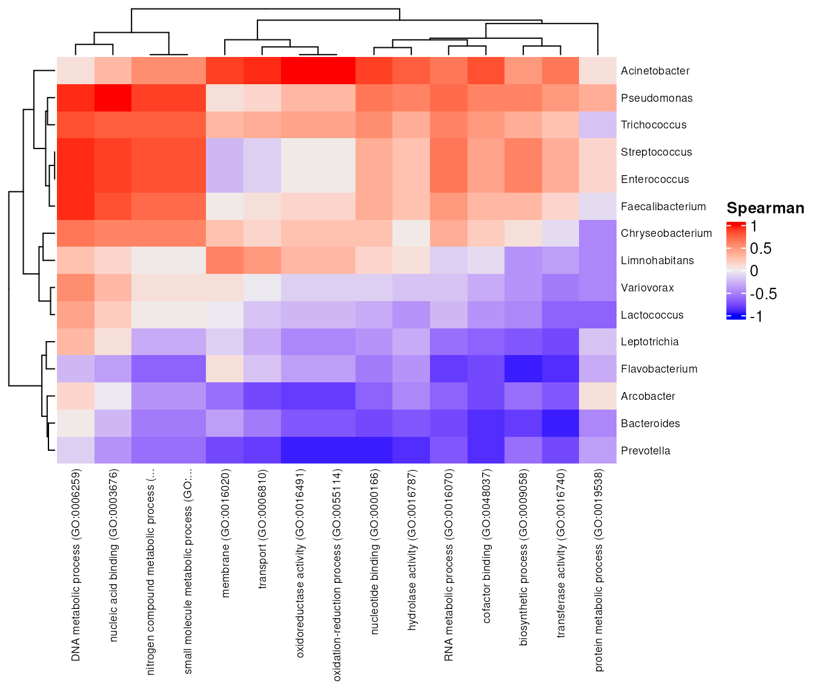
With few samples, strong correlations appear easily by chance. Treat
this as hypothesis generation, and check the adjusted p-values in
associations$p_adj before reading anything into a single
cell.
MGnify for other accessions that might be
interesting (unique or diverse sample sets)colnames(colData(mse)). Is there a
collection date or other variable you could colour the ordination
by?prevalence = 0.5 in the InterPro filter to
0.9. How many entries survive, and what does that tell you
about the “core” functions of these samples?
sessionInfo()
#> R version 4.6.1 (2026-06-24)
#> Platform: x86_64-pc-linux-gnu
#> Running under: Ubuntu 24.04.4 LTS
#>
#> Matrix products: default
#> BLAS: /usr/lib/x86_64-linux-gnu/openblas-pthread/libblas.so.3
#> LAPACK: /usr/lib/x86_64-linux-gnu/openblas-pthread/libopenblasp-r0.3.26.so; LAPACK version 3.12.0
#>
#> locale:
#> [1] LC_CTYPE=en_US.UTF-8 LC_NUMERIC=C
#> [3] LC_TIME=en_US.UTF-8 LC_COLLATE=en_US.UTF-8
#> [5] LC_MONETARY=en_US.UTF-8 LC_MESSAGES=en_US.UTF-8
#> [7] LC_PAPER=en_US.UTF-8 LC_NAME=C
#> [9] LC_ADDRESS=C LC_TELEPHONE=C
#> [11] LC_MEASUREMENT=en_US.UTF-8 LC_IDENTIFICATION=C
#>
#> time zone: Etc/UTC
#> tzcode source: system (glibc)
#>
#> attached base packages:
#> [1] grid stats4 stats graphics grDevices utils datasets
#> [8] methods base
#>
#> other attached packages:
#> [1] ComplexHeatmap_2.29.0 UpSetR_1.4.1
#> [3] scater_1.41.2 scuttle_1.23.2
#> [5] miaViz_1.21.7 ggraph_2.2.2
#> [7] ggplot2_4.0.3 mia_1.21.11
#> [9] TreeSummarizedExperiment_2.21.0 Biostrings_2.81.9
#> [11] XVector_0.53.0 SingleCellExperiment_1.35.2
#> [13] MultiAssayExperiment_1.39.1 SummarizedExperiment_1.43.0
#> [15] Biobase_2.73.2 GenomicRanges_1.65.4
#> [17] Seqinfo_1.3.2 IRanges_2.47.5
#> [19] S4Vectors_0.51.10 BiocGenerics_0.59.12
#> [21] generics_0.1.4 MatrixGenerics_1.25.0
#> [23] matrixStats_1.5.0
#>
#> loaded via a namespace (and not attached):
#> [1] RColorBrewer_1.1-3 shape_1.4.6.1
#> [3] jsonlite_2.0.0 magrittr_2.0.5
#> [5] ggbeeswarm_0.7.3 farver_2.1.2
#> [7] rmarkdown_2.32 GlobalOptions_0.1.4
#> [9] fs_2.1.0 ragg_1.5.2
#> [11] vctrs_0.7.3 memoise_2.0.1
#> [13] DelayedMatrixStats_1.35.0 ggtree_4.3.0
#> [15] BiocBaseUtils_1.15.1 htmltools_0.5.9
#> [17] S4Arrays_1.13.2 BiocNeighbors_2.7.3
#> [19] janeaustenr_1.0.0 SparseArray_1.13.4
#> [21] gridGraphics_0.5-1 sass_0.4.10
#> [23] bslib_0.12.0 tokenizers_0.3.0
#> [25] htmlwidgets_1.6.4 desc_1.4.3
#> [27] plyr_1.8.9 DECIPHER_3.9.3
#> [29] cachem_1.1.0 igraph_2.3.4
#> [31] iterators_1.0.14 lifecycle_1.0.5
#> [33] pkgconfig_2.0.3 rsvd_1.0.6
#> [35] Matrix_1.7-6 R6_2.6.1
#> [37] fastmap_1.2.0 clue_0.3-68
#> [39] digest_0.6.39 aplot_0.3.2
#> [41] tidytext_0.4.3 colorspace_2.1-4
#> [43] ggnewscale_0.5.2 patchwork_1.3.2
#> [45] irlba_2.4.1 SnowballC_0.7.1
#> [47] textshaping_1.0.5 vegan_2.7-6
#> [49] beachmat_2.29.3 labeling_0.4.3
#> [51] polyclip_1.10-7 abind_1.4-8
#> [53] mgcv_1.9-4 compiler_4.6.1
#> [55] doParallel_1.0.17 fontquiver_0.2.1
#> [57] withr_3.0.3 S7_0.2.2
#> [59] BiocParallel_1.47.0 viridis_0.6.5
#> [61] DBI_1.3.0 ggforce_0.5.0
#> [63] MASS_7.3-66 rappdirs_0.3.4
#> [65] DelayedArray_0.39.8 rjson_0.2.23
#> [67] bluster_1.23.1 permute_0.9-10
#> [69] tools_4.6.1 vipor_0.4.7
#> [71] otel_0.2.0 beeswarm_0.4.0
#> [73] ape_5.8-1 glue_1.8.1
#> [75] nlme_3.1-171 cluster_2.1.8.3
#> [77] reshape2_1.4.5 gtable_0.3.6
#> [79] tidyr_1.3.2 BiocSingular_1.29.2
#> [81] tidygraph_1.3.1 ScaledMatrix_1.21.0
#> [83] foreach_1.5.2 ggrepel_0.9.8
#> [85] pillar_1.11.1 stringr_1.6.0
#> [87] yulab.utils_0.2.5 circlize_0.4.18
#> [89] splines_4.6.1 dplyr_1.2.1
#> [91] tweenr_2.0.3 treeio_1.37.1
#> [93] lattice_0.23-1 tidyselect_1.2.1
#> [95] DirichletMultinomial_1.55.1 fontLiberation_0.1.0
#> [97] knitr_1.52 fontBitstreamVera_0.1.1
#> [99] gridExtra_2.3.1 xfun_0.62
#> [101] graphlayouts_1.2.5 stringi_1.8.9
#> [103] lazyeval_0.2.3 ggfun_0.2.2
#> [105] yaml_2.3.12 evaluate_1.0.5
#> [107] codetools_0.2-20 gdtools_0.5.2
#> [109] tibble_3.3.1 ggplotify_0.1.4
#> [111] cli_3.6.6 systemfonts_1.3.2
#> [113] jquerylib_0.1.4 Rcpp_1.1.2
#> [115] png_0.1-9 parallel_4.6.1
#> [117] pkgdown_2.2.1 sparseMatrixStats_1.25.0
#> [119] decontam_1.33.0 viridisLite_0.4.3
#> [121] tidytree_0.4.8 ggiraph_0.9.6
#> [123] scales_1.4.0 purrr_1.2.2
#> [125] crayon_1.5.3 GetoptLong_1.1.1
#> [127] rlang_1.3.0